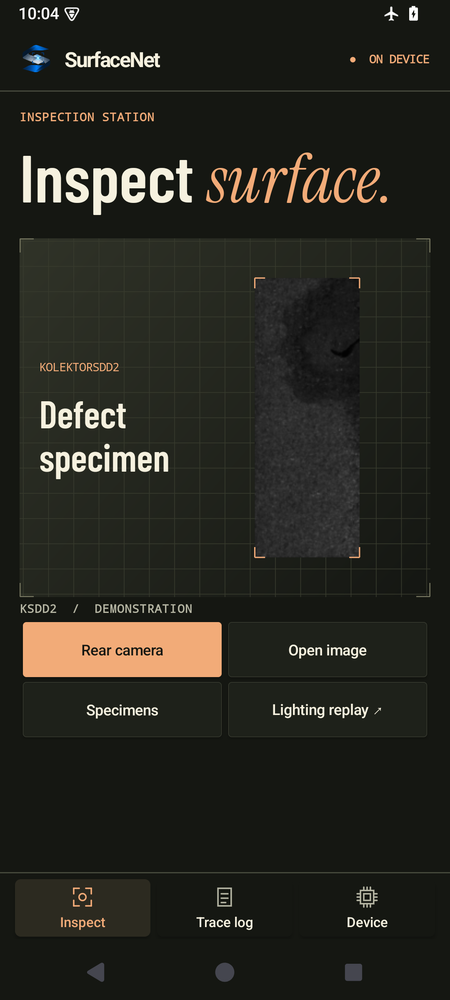

A / Ambient—
Original held-out capture
Bharat AI-SoC PS5 · Manufacturing
Find surface defects in real time. On Android, verify a held finding under a second light and save the evidence with offline Llama guidance.
Explore a recorded inspectionOn-device browser vision
Place a part inside the outline. Freeze a finding to save it with a part ID. Camera frames stay in the browser.
Camera off. Select Start live camera to request access.
KolektorSDD2 · Held-out specimens
Compare two exposures and see which defect pixels agree.
Original held-out capture
Controlled relight and shift
Corroborated pixelsUnsupported pixels
Loading specimen notes.
Decision record
The run reports alignment, light change, and pixel support in each direction.
Preparing browser runtime
The PS5 workflow
The Android app runs SurfaceNet vision and Llama 3.2 1B through ExecuTorch on the Arm CPU.
Use the rear camera to localize defects and see their type and estimated severity.
Review an alert, freeze the evidence, and ask local Llama for an operator action.
Save the part ID, images, masks, decision, and advisory source in the trace log.
Validation record
Four-view Android INT8 results on 1,004 held-out KolektorSDD2 images. See the full benchmark for the model comparison and simulated lighting study.
—Image AUROC
—Defects sent to alert or review
—Vision program size
1,004 official test images
| Metric | Single view | Four views |
|---|
| Metric | Single view | Four views |
|---|
Loading CPU profile.
Four-view INT8 · single-frame scores
| Disposition | Alert cutoff only | With review band |
|---|
Arm64 Android
Run INT8 vision and Llama 3.2 1B on the phone with ExecuTorch. Save inspection records locally.
Open the downloaded file on the phone. If Android prompts you, allow the app you opened it from to install it. Grant camera access when starting live inspection.
Download both files while connected. In SurfaceNet, open Device → Manage model files and import each file using its matching picker.
Allow about 2.5 GB of free space for the downloads and app copies. The APK includes the vision model.
Turn on airplane mode and switch Wi-Fi off. Open Inspect → Specimens → Annotated defect, choose Ask local Llama, then enter a part ID, save, and reopen the result from Trace log. The advice should show Llama 3.2 1B · ExecuTorch / XNNPACK.
Fix the phone in place, open Rear camera, and use Enroll clean with a verified clean reference. For a stable hold, use Verify with rear light. Open Device to export live timings or run the model benchmark.
